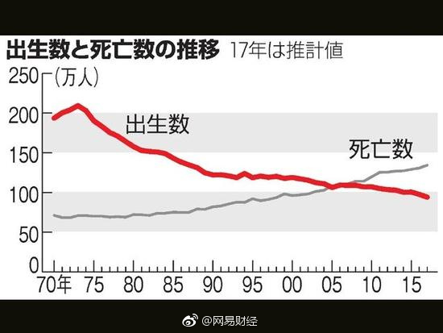

75年人口出生高峰，90年房地产股市大崩盘@网易财经:#网易财经# 【仅94万！日本今年新生人口数创历史新低】日本厚生劳动省22日公布的人口动态统计数据估算值显示，今年日本新出生人口数将仅为94.1万人，创下1899年有统计数据以来的最低值。同时，今年新婚情侣数为60.7万对，也创战后新低。仅94万！日本今年新生人口数创历史新低 
 仅94万！日本今年新生人口数创历史新低
仅94万！日本今年新生人口数创历史新低